Anlage 7 Schifffahrtszeichen
Binnenschifffahrtsstraßen-Ordnung
Vorbemerkung:
1. Die Zeichen in Abschnitt I können, wie in Abschnitt II angegeben, ergänzt oder erläutert werden.
2. Eine Tafel kann, um besser erkennbar zu sein, mit einem schmalen weißen Streifen eingefasst werden.
3. Das Ende eines Verbots, eine Gebots oder einer Einschränkung wird mit dem Hinweisschild E.11 angegeben.
Abschnitt I — Hauptzeichen
A. | Verbotszeichen | |||
A.1 | Verbot der Durchfahrt und Sperrung der Schifffahrt – allgemeines Verbotszeichen – (§ 3.25 Nummer 1 Satz 1 Buchstabe b Doppelbuchstabe bb Dreifachbuchstabe aaa, § 6.08 Nummer 2 Satz 1 Buchstabe a, § 6.16 Nummer 4, § 6.22 Nummer 1, § 6.22a Nummer 2, § 6.25 Nummer 1, § 6.27 Nummer 1 und § 6.28a Nummer 4) | |||
entweder Tafel | 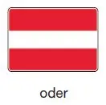 | |||
oder rote Lichter | 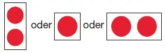 | |||
oder rote Flaggen | 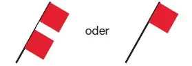 | |||
Werden zwei Lichter oder zwei Flaggen übereinander gezeigt, bedeutet dies ein langdauerndes Verbot. | ||||
A.1a | Gesperrte Wasserflächen; jedoch für ein Kleinfahrzeug ohne Antriebsmaschine befahrbar. (§ 6.22 Nummer 2) | 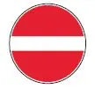 | ||
A.2 | Überholverbot, allgemein (§ 6.11 Nummer 1) | 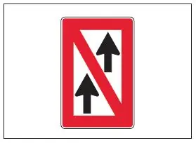 | ||
A.3 | Überholverbot für Verbände untereinander und zwischen einem Verband und gekuppelten Fahrzeugen. Satz 1 gilt nicht, wenn einer der Verbände ein Schubverband ist, dessen Länge 110,00 m und dessen Breite 12,00 m nicht überschreiten. (§ 6.11 Nummer 2) | 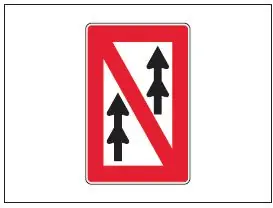 | ||
A.4 | Verbot des Begegnens und Überholens (§ 6.08 Nummer 1 Satz 1) | 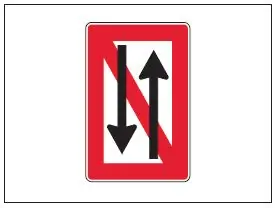 | ||
A.4.1 | Verbot des Begegnens und Überholens für Verbände untereinander (§ 6.08 Nummer 1 Satz 1) |  | ||
A.5 | Stillliegeverbot auf der Seite der Wasserstraße, auf der das Tafelzeichen steht (§ 7.02 Nummer 1 Buchstabe c) | 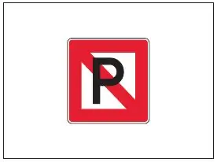 | ||
A.5.1 | Stillliegeverbot auf der Wasserfläche, deren Breite, gemessen vom Aufstellungsort, auf dem Tafelzeichen in Metern angegeben ist (§ 7.02 Nummer 1 Buchstabe k) | 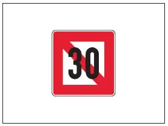 | ||
A.6 | Ankerverbot und Verbot des Schleifenlassens von Ankern, Trossen oder Ketten auf der Seite der Wasserstraße, auf der das Tafelzeichen steht (§ 6.18 Nummer 2 Satz 2 und § 7.03 Nummer 1 Buchstabe b) | 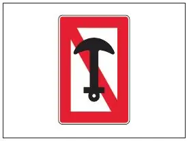 | ||
A.7 | Festmacheverbot am Ufer auf der Seite der Wasserstraße, auf der das Tafelzeichen steht (§ 7.04 Nummer 1 Buchstabe b) | 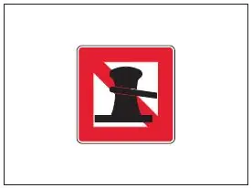 | ||
A.8 | Wendeverbot (§ 6.13 Nummer 4 Satz 1) | 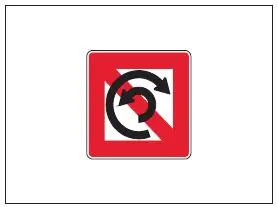 | ||
A.9 | Vermeidung von Wellenschlag oder Sogwirkungen (§ 6.20 Nummer 1 Satz 2 Buchstabe e) | 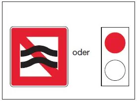 | ||
A.10 | Verbot, außerhalb der angezeigten Begrenzung zu fahren (§ 6.24 Nummer 2 Buchstabe a) | 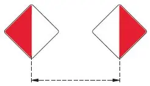 | ||
A.11 | Verbot der Einfahrt, die Vorbereitungen zur Fortsetzung der Fahrt sind jedoch zu treffen (§ 6.28a Nummer 2 Satz 2 Buchstabe c) | 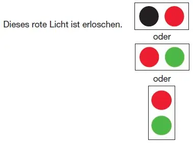 | ||
A.12 | Fahrverbot für ein Fahrzeug mit Maschinenantrieb | 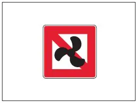 | ||
A.13 | Fahrverbot für ein Sportboot | 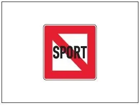 | ||
A.14 | Verbot des Wasserskilaufens | 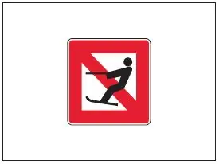 | ||
A.15 | Fahrverbot für ein Segelfahrzeug | 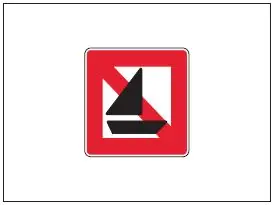 | ||
A.16 | Fahrverbot für ein Fahrzeug, das weder mit Maschinenantrieb noch unter Segel fährt | 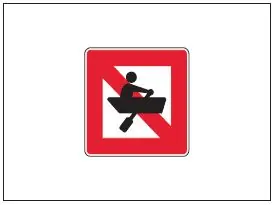 | ||
A.17 | Verbot des Segelsurfens | 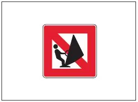 | ||
A.18 | Fahrverbot für ein Wassermotorrad (Waterscooter, Jetski usw.) | 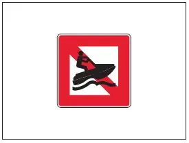 | ||
A.19 | (ohne Inhalt) | |||
A.20 | Bade- und Schwimmverbot (§ 8.10 Nummer 1 Buchstabe d) | 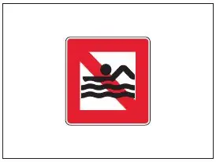 | ||
B. | Gebotszeichen | |||
B.1 | Gebot, die durch den Pfeil angezeigte Richtung einzuschlagen (§ 6.12 Nummer 1) | 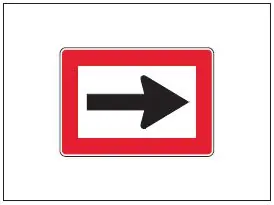 | ||
B.2 | a) | Gebot, auf die Fahrwasserseite hinüberzufahren, die auf der Backbordseite des Fahrzeugs liegt (§ 6.12 Nummer 1) | 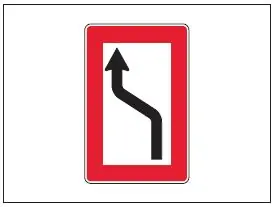 | |
b) | Gebot, auf die Fahrwasserseite hinüberzufahren, die auf der Steuerbordseite des Fahrzeugs liegt (§ 6.12 Nummer 1) | 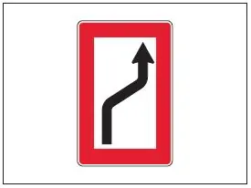 | ||
B.3 | a) | Gebot, die Fahrwasserseite zu halten, die auf der Backbordseite des Fahrzeugs liegt (§ 6.12 Nummer 1) | 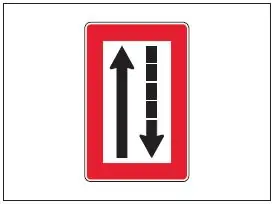 | |
b) | Gebot, die Fahrwasserseite zu halten, die auf der Steuerbordseite des Fahrzeugs liegt (§ 6.12 Nummer 1) | 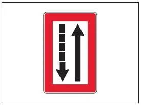 | ||
B.4 | a) | Gebot, das Fahrwasser nach Backbord zu überqueren (§ 6.12 Nummer 1) | 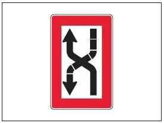 | |
b) | Gebot, das Fahrwasser nach Steuerbord zu überqueren (§ 6.12 Nummer 1) | 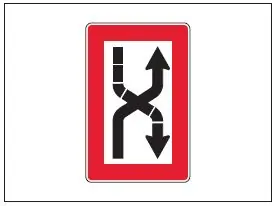 | ||
B.5 | Gebot, unter bestimmten Bedingungen anzuhalten (§ 6.26 Nummer 2 Satz 2, § 6.28 Nummer 2 Satz 2 und § 6.29 Nummer 2 Satz 1) | 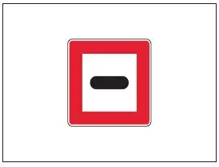 | ||
B.6 | Gebot, die angegebene Geschwindigkeit gegenüber dem Ufer (in km/h) nicht zu überschreiten | 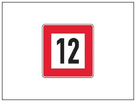 | ||
B.7 | Gebot, Schallzeichen zu geben | 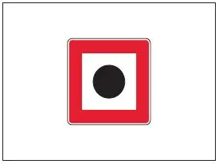 | ||
B.8 | Gebot, besondere Vorsicht walten zu lassen (§ 6.08 Nummer 2 Satz 2) | 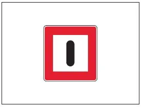 | ||
B.9 | a) | Gebot, nur dann in die Hauptwasserstraße einzufahren oder sie zu überqueren, wenn dadurch ein Fahrzeug auf der Hauptwasserstraße nicht gezwungen wird, seinen Kurs oder seine Geschwindigkeit zu ändern (§ 6.16 Nummer 3) | 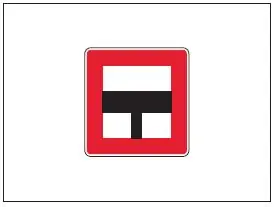 | |
b) | wie vor | 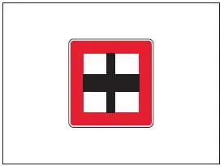 | ||
B.10 | Gebot, bei diesem von Land gegebenen „Bleib-Weg-Signal“ die unter § 8.09 Nummer 3 bis 5, jeweils in Verbindung mit Nummer 6, genannten Maßnahmen zu ergreifen; das Schallzeichen besteht aus einer mindestens 15 Minuten langen ununterbrochenen Wiederholung abwechselnd eines kurzen und eines langen Tons, das Lichtzeichen entspricht dem nach § 4.01 Nummer 2. | 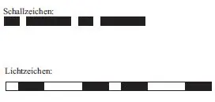 | ||
B.11 | a) | Gebot, Sprechfunk zu benutzen (§ 4.05 Nummer 6) | 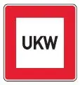 | |
b) | Gebot, Sprechfunk auf dem angegebenen Kanal zu benutzen (§ 4.05 Nummer 6) Beispiel: Kanal 11 | 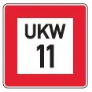 | 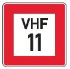 | |
B.12 | Gebot zur Nutzung von Landstromanschlüssen (§ 7.06 Nummer 4) |  | ||
C. | Zeichen für Einschränkungen | |||
C.1 | Die Fahrwassertiefe ist begrenzt. | 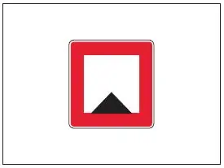 | ||
C.2 | Die lichte Höhe über dem Wasserspiegel ist begrenzt. | 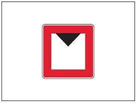 | ||
C.3 | Die Breite der Durchfahrtsöffnung oder des Fahrwassers ist begrenzt. | 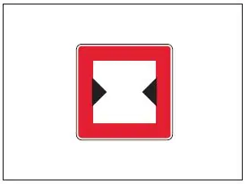 | ||
C.4 | Es bestehen Schifffahrtsbeschränkungen; sie sind auf einem zusätzlichen Schild unter dem Schifffahrtszeichen angegeben. | 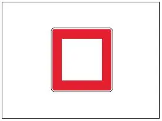 | ||
C.5 | Das Fahrwasser ist am rechten (linken) Ufer eingeengt; die Zahl auf dem Zeichen gibt den Abstand in Metern an, in dem sich ein Fahrzeug vom Tafelzeichen entfernt halten muss. | 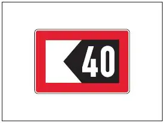 | ||
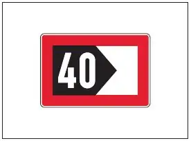 | ||||
D. | Empfehlende Zeichen | |||
D.1 | Empfohlene Durchfahrtsöffnung | |||
a) | für Verkehr in beiden Richtungen; (§ 6.25 Nummer 2 Satz 1 Buchstabe a und § 6.27 Nummer 2 Satz 2) | 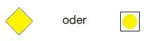 | ||
b) | für Verkehr nur in Richtung, in der die Zeichen sichtbar sind (in der anderen Richtung untersagt). (§ 6.25 Nummer 2 Satz 1 Buchstabe b und § 6.27 Nummer 2 Satz 2) | 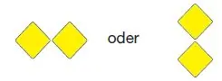 | ||
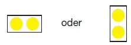 | ||||
D.2 | Empfehlung, sich in dem durch die Tafeln begrenzten Raum zu halten (§ 6.24 Nummer 2 Buchstabe b) | 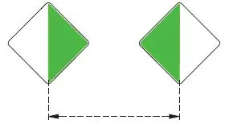 | ||
D.3 | Empfehlung, in die Richtung des Pfeils zu fahren; | |||
in der Richtung vom festen Signallicht zum Gleichtaktsignallicht zu fahren. | ||||
E. | Hinweiszeichen | |||
E.1 | Erlaubnis zur Durchfahrt (allgemeines Zeichen) (§ 3.25 Nummer 1 Buchstabe a Doppelbuchstabe bb Dreifachbuchstabe aaa, § 6.08 Nummer 2 Satz 1 Buchstabe b, § 6.27 Nummer 2 Satz 1 und § 6.28a Nummer 4) | |||
E.2 | Kreuzung einer Hochspannungsleitung | |||
E.3 | Hinweis auf ein Wehr | |||
E.4a | Nicht frei fahrende Fähre | |||
E.4b | Frei fahrende Fähre | |||
E.5 | Erlaubnis zum Stillliegen auf der Seite der Wasserstraße, auf der das Zeichen steht (§ 7.05 Nummer 1) | |||
E.5.1 | Erlaubnis zum Stillliegen auf der Wasserfläche, deren Breite, gemessen vom Aufstellungsort, auf dem Tafelzeichen in Metern angegeben ist (§ 7.05 Nummer 2) | |||
E.5.2 | Erlaubnis zum Stillliegen auf der Wasserfläche zwischen den zwei Entfernungen, die, gemessen vom Aufstellungsort, auf dem Tafelzeichen in Metern angegeben sind (§ 7.05 Nummer 3) | |||
E.5.3 | Höchstzahl der Fahrzeuge, die auf der Seite der Wasserstraße, auf der das Tafelzeichen steht, nebeneinander stillliegen dürfen (§ 7.05 Nummer 4) | |||
E.5.4 | Liegestelle für ein Fahrzeug der Schubschifffahrt, das nicht die Bezeichnung nach § 3.14 führen muss (§ 7.06 Nummer 1) | |||
E.5.5 | Liegestelle für ein Fahrzeug der Schubschifffahrt, das die Bezeichnung nach § 3.14 Nummer 1 führen muss (§ 7.06 Nummer 1) | |||
E.5.6 | Liegestelle für ein Fahrzeug der Schubschifffahrt, das die Bezeichnung nach § 3.14 Nummer 2 führen muss (§ 7.06 Nummer 1) | |||
E.5.7 | Liegestelle für ein Fahrzeug der Schubschifffahrt, das die Bezeichnung nach § 3.14 Nummer 3 führen muss (§ 7.06 Nummer 1) | |||
E.5.8 | Liegestelle für ein anderes Fahrzeug als ein Fahrzeug der Schubschifffahrt, das nicht die Bezeichnung nach § 3.14 führen muss (§ 7.06 Nummer 1) | |||
E.5.9 | Die benutzte Hauptwasserstraße trifft auf eine von beiden Seiten einmündende Nebenwasserstraße (§ 6.16 Nummer 1 Satz 3 und 4) | a) | ||
Die benutzte Hauptwasserstraße trifft auf eine von Steuerbord einmündende Nebenwasserstraße (§ 6.16 Nummer 1 Satz 3 und 5) | b) | |||
Die benutzte Hauptwasserstraße trifft auf eine von Backbord einmündende Nebenwasserstraße (§ 6.16 Nummer 1 Satz 3 und 6) | c)  | |||
E.5.10 | Liegestelle für ein anderes Fahrzeug als ein Fahrzeug der Schubschifffahrt, das die Bezeichnung nach § 3.14 Nummer 2 führen muss (§ 7.06 Nummer 1) | |||
E.5.11 | Liegestelle für ein anderes Fahrzeug als ein Fahrzeug der Schubschifffahrt, das die Bezeichnung nach § 3.14 Nummer 3 führen muss (§ 7.06 Nummer 1) | |||
E.5.12 | Liegestelle für ein Fahrzeug, das keine Bezeichnung nach § 3.14 führen muss (§ 7.06 Nummer 1) | |||
E.5.13 | Liegestelle für ein Fahrzeug, das die Bezeichnung nach § 3.14 Nummer 1 führen muss (§ 7.06 Nummer 1) | |||
E.5.14 | Liegestelle für ein Fahrzeug, das die Bezeichnung nach § 3.14 Nummer 2 führen muss (§ 7.06 Nummer 1) | |||
E.5.15 | Liegestelle für ein Fahrzeug, das die Bezeichnung nach § 3.14 Nummer 3 führen muss (§ 7.06 Nummer 1) | |||
E.6 | Erlaubnis zum Ankern auf der Seite der Wasserstraße, auf der das Tafelzeichen steht (§ 7.03 Nummer 2) | |||
E.7 | Erlaubnis zum Festmachen am Ufer auf der Seite der Wasserstraße, auf der das Tafelzeichen steht (§ 7.04 Nummer 2) | |||
E.7.1 | Erlaubnis zum Festmachen am Ufer für das sofortige Ein- oder Ausladen eines Kraftwagens (§ 7.04 Nummer 2) | |||
E.8 | Hinweis auf eine Wendestelle (§ 6.13 Nummer 4 Satz 2 und § 7.02 Nummer 1 Buchstabe i) | |||
E.8 mit einer zusätz- lichen recht- eckigen weißen Tafel | Hinweis auf eine Wendestelle für Fahrzeuge bis zu der auf der zusätzlichen Tafel angegebenen Länge (§ 6.13 Nummer 4 Satz 3) | |||
E.9 | Die benutzte Hauptwasserstraße trifft auf eine von beiden Seiten einmündende Nebenwasserstraße (§ 6.16 Nummer 1 Satz 3 und 4) | |||
Die benutzte Hauptwasserstraße trifft auf eine von Steuerbord einmündende Nebenwasserstraße (§ 6.16 Nummer 1 Satz 3 und 5) | ||||
Die benutzte Hauptwasserstraße trifft auf eine von Backbord einmündende Nebenwasserstraße (§ 6.16 Nummer 1 Satz 3 und 6) | ||||
E.10 | Die benutzte Nebenwasserstraße trifft auf eine von beiden Seiten einmündende Hauptwasserstraße (§ 6.16 Nummer 1 Satz 3 und 7) | |||
Die benutzte Nebenwasserstraße mündet in eine Hauptwasserstraße ein (§ 6.16 Nummer 1 Satz 3 und 8) | ||||
E.11 | Ende eines Verbots oder eines Gebots, das nur in einer Verkehrsrichtung gilt, oder Ende einer Einschränkung. | |||
E.12 | ohne Inhalt | |||
E.12a | Hinweis auf ein ausfahrendes Fahrzeug (§ 6.16 Nummer 5 Satz 1) | |||
E.13 | Trinkwasserzapfstelle | |||
E.14 | Fernsprechstelle | |||
E.15 | Fahrerlaubnis für ein Fahrzeug mit Maschinenantrieb | |||
E.16 | Fahrerlaubnis für ein Sportboot | |||
E.17 | Wasserskistrecke | |||
E.18 | Fahrerlaubnis für ein Segelfahrzeug | |||
E.19 | Fahrerlaubnis für ein Fahrzeug, das weder mit Maschinenantrieb noch unter Segel fährt | |||
E.20 | Erlaubnis für Segelsurfen | |||
E.21 | Nautischer Informationsfunk Beispiel: Kanal 18 | |||
E.22 | Fahrerlaubnis für ein Wassermotorrad (Waterscooter, Jetski usw.) | |||
E.23 | Hochwassermarken | |||
Die Marken sind in heller Farbe auf dunklem Untergrund oder in dunkler Farbe auf hellem Untergrund angebracht. | ||||
E.24 | Erlaubnis für Kitesurfen | |||
E.25 | Landstromanschluss vorhanden | |||
E.26 | Hinweis auf ein bestehendes Bade- und/oder Schwimmverbot | |||
Abschnitt II Zusätzliche Schilder, Pfeile oder Aufschriften | ||||
Die Hauptzeichen in Abschnitt I können durch ein zusätzliches Schild, einen zusätzlichen Pfeil oder eine zusätzliche Aufschrift ergänzt werden. | ||||
1. | Ein Schild, das die Entfernung angibt, in der die durch das Hauptzeichen angezeigte Bestimmung oder Besonderheit zu beachten ist. | |||
Das Schild wird über dem Hauptzeichen angebracht. | ||||
Beispiele: | ||||
2. | Ein Pfeil, der angibt, in welcher Richtung der Strecke das Hauptzeichen gilt. | |||
Beispiele: | ||||
a) | ||||
b) | ||||
c) | Verbot der Einfahrt in einen Hafen oder in eine Nebenwasserstraße, die in der angezeigten Richtung liegen: rotes Licht A.1 und leuchtender Pfeil (§ 6.16 Nummer 4) | |||
3. | Ein Schild, das ergänzende Erklärungen oder Hinweise gibt. Das Schild wird unter dem Hauptzeichen angebracht. | |||
Beispiele: | ||||